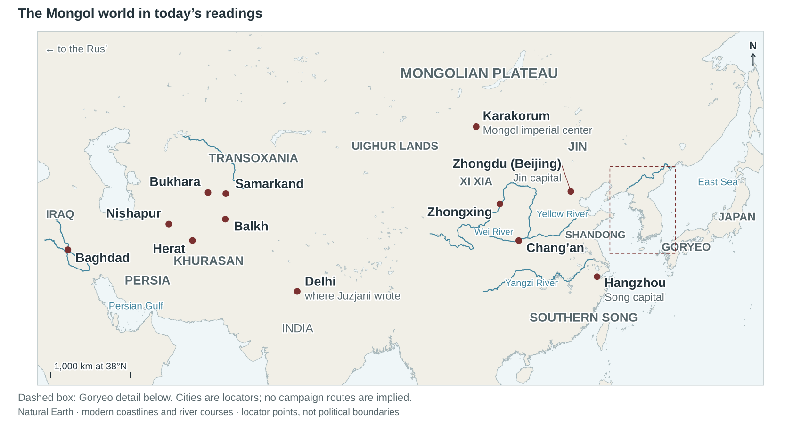
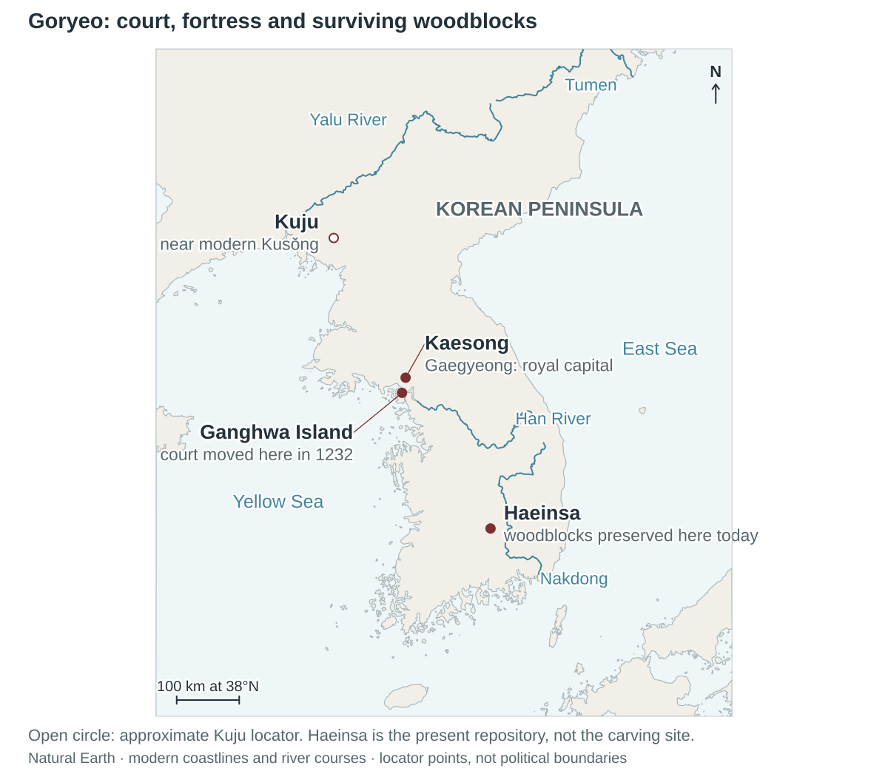

Claiming Heaven’s favor
“Heaven has abandoned China owing to its haughtiness and extravagant luxury.”
Letter, Bretschneider p.37 · Reader PDF p.2. Reader

The Tripitaka Koreana is a collection of Buddhist scriptures carved onto wooden printing blocks. Ink applied to the carved surface produces pages on paper.
Ebrey p.176 dates the carving to 1237–1251; UNESCO’s World Heritage description gives 1237–1248. Both place it during the Mongol invasions. Haeinsa is the collection’s present home; its current storage halls were built later. Locate Haeinsa, Ganghwa and Kuju on the map.
Temujin became Chinggis Khan in 1206. “Genghis Khan” is another English spelling. His achievement was political as well as military: rival groups became a larger army and governing order.

Pastoral nomads move herds between grazing grounds. Steppe societies also traded, fought and negotiated with agricultural states. The Mongols inherited this long history; horses alone do not explain their new scale of conquest.
Taking a walled city required different skills from winning a cavalry battle. Governing its population required still others. Campaigns against Japan, Vietnam and Java also show the limits of Mongol success.
Wen and wu: wén means civil or cultural accomplishment; wǔ means martial power. The letter to Changchun shows a conqueror seeking authority and expertise beyond warfare.
Changchun, also known as Qiu Chuji, was a Daoist religious teacher. The letter asks him to travel to the khan. It presents the conqueror as simple, chosen by Heaven and in need of wise assistance.
“Heaven has abandoned China owing to its haughtiness and extravagant luxury.”
Letter, Bretschneider p.37 · Reader PDF p.2. Reader
“To cross a river we make boats and rudders. Likewise we invite sage men, and choose out assistants for keeping the empire in good order.”
Letter, Bretschneider p.38 · Reader PDF p.3. Reader
These are claims made in a Chinese-language letter issued in Chinggis’s name. They show how he sought to persuade a religious authority. They do not by themselves establish how he treated conquered people.
E. Bretschneider, Mediæval Researches from Eastern Asiatic Sources, vol. I (1888), pp.37–39. Bretschneider suggests a Chinese adviser composed the wording, but his proposed identification of the writer is uncertain.
Voices of the Past: reading of the letter · 5:37. A modern performance of the source. The excerpts above and the Reader PDF provide the written version.
Morgan is a modern historian evaluating accounts of conquest. Reports of mass death are evidence, but their numbers need to be tested against population, genre and the writer’s situation.
“not as statistical information but as evidence of the state of mind”
Morgan p.78 · Reader PDF p.10. Reader
Killing, enslavement and forced relocation destroyed communities. An implausible total does not make the catastrophe imaginary.
A qanat is an underground channel that brings groundwater to farmland. It requires continual maintenance. The loss or displacement of farming communities could damage agriculture for generations.
Morgan also stresses variation: some places escaped destruction or later prospered. Neither universal ruin nor universal prosperity describes the whole empire.
Chang’an attracted foreign residents, merchants and religious communities. Buddhism, goods and artistic forms crossed Eurasia long before Mongol conquest.
A larger imperial network supported movement by merchants, envoys and specialists. Some traveled for opportunity; others were taken by force.
Pax Mongolica means “Mongol peace.” The phrase describes conditions that facilitated exchange; it cannot describe every community’s experience of conquest.

The king remained, but the Choe military family controlled the government. Moving the court protected the ruling group while mainland communities bore repeated attacks. Resistance could defend the dynasty and impose severe costs on its people.
The explanation on SKT p.201 is the modern editors’ introduction. The following Kuju narrative is a translated passage from the Koryŏ sa, the later history of Goryeo.
Pak Sŏ commanded the defense of Kuju in 1231. The account describes defenders answering successive siege methods with repairs and countermeasures.
“chained iron links across the holes and repaired them”
Koryŏ sa excerpt, SKT p.203 · Reader PDF p.17. Reader
Pak Sŏ keeps resisting. Local military success gives him a reason to continue.
The king orders surrender. The commander’s duty to defend the town now conflicts with obedience to his ruler.
“seriously violating the king’s orders”
Koryŏ sa excerpt, SKT p.203 · Reader PDF p.17. Reader
Pak Sŏ finally yields to the order. The town’s defense and the state’s diplomatic settlement operate at different scales. This is a later historical account of the siege, not a transcript recorded at the walls.
Peace in 1259 and the court’s return to the mainland in 1270 lead to a subordinate relationship. Goryeo keeps its royal dynasty, unlike the defeated Southern Song.
Royal marriages tie Goryeo to the Mongol ruling house. Its rulers supply resources and ships for campaigns against Japan, while Mongol influence shapes aristocratic life.
Conquest did not produce one political arrangement everywhere. Goryeo’s surviving dynasty was compatible with dependence on the Mongol empire.